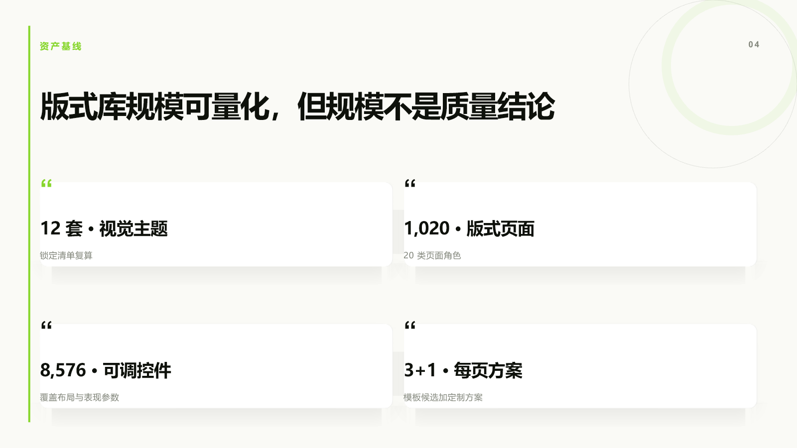
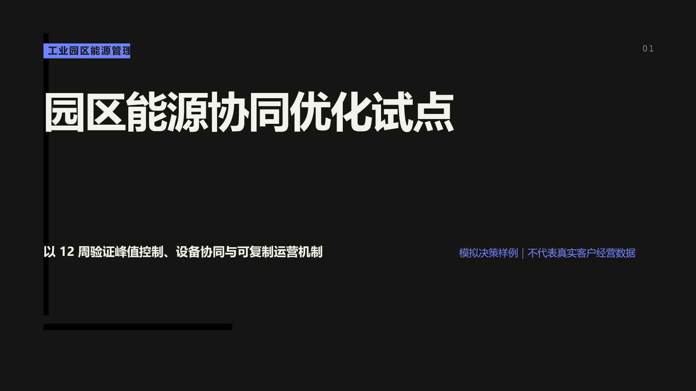

一次内容建模，得到 32 个可比较候选
优势是候选生产、全稿分配、容量检查和统一导出；精选 v4 有 203 个 PPTX 对象，最终 0 越界。
- 品牌
- 近似；主题锁定电蓝 + 酸性绿
- 图表
- SVG/图像回退，10 个标签提取为文字
- 代价
- 4 次艺术指导修订；仍需 PowerPoint QA
00.2 / EXAMPLE ATLAS
先看可下载、可复核的真实产物，再看同一机制如何迁移到研究、经营、培训和方案路演。模拟场景只演示内容组织，不冒充上游实测。
8 页 canonical content 生成 32 个 3+1 候选，再精选为 8 页 PPTX/PDF。
带生成媒体、负荷图表和品牌契约，对照 Dashi v4 与直接编程路线。
从访谈、竞品与场景证据形成进入建议和 90 天验证门槛。
把 ARR、NRR、CAC 与毛利率转化为漏斗诊断、Q4 行动和责任目标。
用课程地图、风险案例和情境测验把知识传达转换为行为判断。
从业务问题、七层架构和数据边界推进到 12 周试点决策。
00.3 / REAL RUN 01
本机实测 锁定上游 v0.4.11、theme07 与固定 seed；未修改上游源码。下面所有画面来自真实 PPTX 的 PowerPoint 级渲染。
固定事实源、容量筛选、3+1 对照、可复现 seed、DOM 到 PPTX 的分层映射，这些构成可审计的工程价值。
视觉统一、信息清楚，但没有形成强烈独有风格；定制 v4 也主要是网格、留白和绿黑主题组合。

goal schema、props 与文案检查均通过。
第 15、18 物理页在真实渲染中出界。
危险布局集合仍被稳定复现。
内容不变，只替换 page057 与 page026。
32 页对照稿与 8 页精选稿均通过。
如果只看最终视觉，它确实像“基础通用 PPT”；如果看可复现、可比较、可导出、能把失败暴露出来的生产过程，它比单次生成器更像一套演示文稿编译与质检工具链。
查看固定输入与 3+1 规格 →00.4 / REAL RUN 02 · BRAND + MEDIA + CHART
本机实测 虚构的 GRIDWISE LAB 园区能源试点；8 页形成完整决策故事。所有业务、运营和财务数字均为模拟数据。
优势是候选生产、全稿分配、容量检查和统一导出；精选 v4 有 203 个 PPTX 对象，最终 0 越界。
请求的 navy / cyan / lime 被逐项落实；153 个对象，负荷图表为原生可编辑 chart，8 页均含来源备注。
#061B2C#16D7C8#B7F34A目标#2742EC#C2F53D—近似#061B2C#16D7C8#B7F34A精确
Dashi scaffold 与首次 HTML render；生成 8×3+1 的结构与画面。
32 页对照 PPTX / 8 页 v4 PPTX 导出。本机墙钟时间。
直接编程基线构建一条 8 页路线；不包含候选检索能力。
人工 PowerPoint、通用 AI 服务、模型 token 与人工审阅成本。
高频、结构重复、需要候选与审计：优先验证 Dashi。
一次性高价值、品牌严格、图表必须原生：直接编程或先扩展 Dashi 主题与导出 recipe。
00.5 / DASHI COMPILER
机制模拟 参数与评分用于解释锁定版本的工作方式，不代表本次调用了上游模型或导出器。
3 / 5 个候选通过硬约束
为什么有特色：先用容量硬条件排除错误版式，再用角色、重点和全稿重复惩罚排序，而不是让模型凭感觉挑一页。
源码已核验 schema v2、layout-query 与 layout-allocation 支持这条机制；视觉质量和真实导出仍需独立实验。
01 / CAPABILITY
筛选能力域，观察这套 Skill 在“内容—设计—编辑—交付”链路里的覆盖位置。
宿主 Agent 先拆解叙事，再用硬约束与软约束检索合适布局；不是把文字直接塞进固定模版。
固定提交中包含 12 个主题、1,020 个布局、8,576 个控件，支持从标准模板快速起稿。
standard、template、poster 三类既定入口之外，还能走 bespoke 路线制作更自由的页面。
提供图表、结构化模型、媒体 staging 等内容原语，让 Agent 不只会排文本框。
生成结果不是一次性图片：网页编辑器让用户调整文本、强调和页面，再继续导出。
一份结构化内容可进入三种交付通道，但表达能力、可编辑性和保真方式并不相同。
项目生成、预览与导出可在本机完成，适合不愿把内部材料提交给在线 PPT SaaS 的团队。
仓库包含结构与导出验证脚本；它降低“生成成功但文件不可交付”的概率，不等于自动保证审美。
当前显示 8 项能力。
01.5 / EVIDENCE LEDGER
这里不是“功能宣传”。筛选证据状态，查看我们知道什么、根据什么知道，以及这条证据仍不能证明什么。
阅读方法 先看证据状态，再看“支持的结论”，最后看“仍不能证明”。静态实现证据不自动等于真实产出质量。
project/layout-manifest.json支持：上游确有大规模结构化版式资产。
仍不能证明每个布局都能被稳定选中、正确填充并通过导出。
references/goal-spec.schema.json支持：内容与视觉方案在 schema v2 中被明确解耦。
仍不能证明四个方案都能保持百分之百事实一致。
scripts/workflow/layout-query.mjs支持：标题长度、条目、媒体等容量会参与选择，而非纯随机套模板。
仍不能证明评分函数与人的审美选择始终一致。
scripts/workflow/layout-allocation.mjs支持：beam search、seed、多样性与复用惩罚共同控制全稿节奏。
仍不能证明依赖或浏览器升级后仍完全可复现。
assets/template-swiss.html支持：文本、媒体、页面状态具备本地草稿与服务端自动保存路径。
仍不能证明复杂长稿编辑不存在状态冲突或数据丢失。
scripts/export-pptx.mjs支持：导出不是读取旧快照，复杂区域存在截图回退机制。
仍不能证明复杂页面的原生对象比例和跨 Office 保真。
README.md / package docs支持：可以形成一个后续成本实验的比较基线。
仍不能证明当前模型、当前材料和当前版本下仍是同一成本。
experiments/real-run-01支持：固定 seed 可逐字节复现；最终 PPTX 为 118 个文字、76 个形状和 6 个截图对象。
仍不能证明它在其他主题、WPS、复杂媒体和其他 Agent 宿主上同样稳定。
02 / MECHANISM
真正的核心不是一个“生成”按钮，而是两种能力分工后形成的流水线。
把文档、研究记录、数据和品牌要求交给宿主 Agent，并声明汇报目标与受众。
源码锚点Skill 工作流与内容输入约定
03 / OUTCOME
选择交付格式，看表达力、稳定性与后续编辑之间的真实取舍。
保留浏览器布局、可交互编辑与更丰富的动态表达，适合作为本地审阅与在线演示母版。
适合归档、发送、打印或审批。它把页面表达冻结下来，换来跨环境的一致查看。
导出器会把部分元素转换为 PowerPoint 原生对象，并以截图等方式兜底复杂表达。最终可编辑程度取决于页面组成。
03.5 / ALTERNATIVES
选工具先看你要优化什么：速度、控制力、原生编辑、本地隐私，还是组织级自动化。
适合少量、高价值、强艺术指导或复杂原生动画。
适合快速一次性初稿，且材料允许进入第三方服务。
适合字段固定、版式固定、大批量生成的工程系统。
适合研究、复盘、培训等重复性知识工作，并接受 Agent 与人工审阅。
研究判断 上述等级是基于架构特性的定性比较，不是独立性能基准；“原生编辑”尤其需要真实 PPTX 实验校准。
04 / SCENARIO LAB
场景模拟 所有业务数字均为演示数据；样例用于展示内容结构、版式与交付能力，不冒充真实客户案例或上游导出成品。
RESEARCH / CONSULTING
模拟数据28 次访谈、12 个竞品和细分场景为演示设定。
THE STORY ARC
05 / AUDIENCE & SCENARIO
它不是只服务“会写代码的人”。选择受众，查看目标、价值、风险和最合适的使用方式。
PRIMARY AUDIENCE
判断是否值得进入团队工具链，而不是只看一份漂亮 Demo。
快速理解架构、依赖、许可边界与集成成本。
模板质量、导出保真和 Agent 成本仍需用自己的材料复测。
以 10 份真实汇报做沙盒试点，建立人工基线和验收门槛。
FIT MATRIX
05.5 / ADOPTION CHECK
拖动六个维度，得到一条可解释的采用建议。这个工具评估“是否值得试点”，不替代采购、法务或安全审查。
CONDITIONAL PILOT
已经具备部分价值条件，但应先用固定材料验证导出质量和维护成本，再决定是否扩大。
MINIMUM PILOT
10 份真实材料覆盖研究、复盘、培训三类任务。
三种交付物同时检查 HTML、PDF、PPTX。
五项量化指标首稿时间、事实修改、设计修改、原生编辑率、总成本。
一个退出条件关键场景未过门槛时，不进入正式流程。
06 / EXTENSION
按建设周期筛选方向。真正有价值的扩展，优先解决证据、治理和协作，而不只是再加一批模板。
为每条事实保留来源、时间和置信度，导出前提示无证据结论。
优先级 A把品牌字体、色板、图表、页脚和可用布局封装为可测试资产。
优先级 A建立可复现的 PPTX 保真、溢出、可编辑率、耗时与成本测试。
优先级 A降低对专有导出器的锁定，并允许按行业接入不同交付通道。
优先级 B连接知识库、表格、BI、代码仓库与引用管理系统，保留来源血缘。
优先级 B让 Canonical JSON 进入审阅、差异对比、评论和回滚工作流。
优先级 B记录模型、提示、素材、渲染器、导出器版本和每次生产成本。
优先级 C处理多语言排版、阅读顺序、对比度、替代文本与演讲者辅助。
优先级 CLICENSE
主仓库是 AGPL-3.0；其中 html-deck-to-pptx 导出器标注为专有许可。商用或分发前需要分别审视。
PRIVACY
预览服务默认配置可能监听 0.0.0.0。处理敏感材料时建议明确绑定 127.0.0.1 并检查网络边界。
CLAIMS
上游关于 token 成本和效果的数字属于作者自述；本站没有把它们当成独立基准结论。
上游自述ADOPTION GATE
先验证内容效率 同一材料，比较人工与 Agent 的首稿时间和结构质量。
再验证交付质量 检查 PDF 保真、PPTX 可编辑率、字体和复杂元素。
最后决定组织化 只有当品牌、合规、成本和维护都过门槛，再接入正式流程。